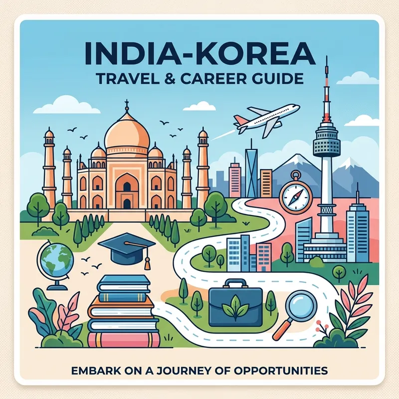

India–Korea Cultural Exchange Community: Complete Guide

Table of Contents
1. Introduction to India–Korea Cultural Exchange
This section discusses friendship, culture, language learning, study opportunities, travel, careers, community building, and cultural exchange between India and South Korea. People interested in Korean culture, Korean language learning, study in Korea, jobs in Korea for Indians, Korean friends online, India Korea friendship, and cultural exchange can benefit from active communities and meaningful conversations. This section discusses friendship, culture, language learning, study opportunities, travel, careers, community building, and cultural exchange between India and South Korea. People interested in Korean culture, Korean language learning, study in Korea, jobs in Korea for Indians, Korean friends online, India Korea friendship, and cultural exchange can benefit from active communities and meaningful conversations. This section discusses friendship, culture, language learning, study opportunities, travel, careers, community building, and cultural exchange between India and South Korea. People interested in Korean culture, Korean language learning, study in Korea, jobs in Korea for Indians, Korean friends online, India Korea friendship, and cultural exchange can benefit from active communities and meaningful conversations. This section discusses friendship, culture, language learning, study opportunities, travel, careers, community building, and cultural exchange between India and South Korea. People interested in Korean culture, Korean language learning, study in Korea, jobs in Korea for Indians, Korean friends online, India Korea friendship, and cultural exchange can benefit from active communities and meaningful conversations. This section discusses friendship, culture, language learning, study opportunities, travel, careers, community building, and cultural exchange between India and South Korea. People interested in Korean culture, Korean language learning, study in Korea, jobs in Korea for Indians, Korean friends online, India Korea friendship, and cultural exchange can benefit from active communities and meaningful conversations. This section discusses friendship, culture, language learning, study opportunities, travel, careers, community building, and cultural exchange between India and South Korea. People interested in Korean culture, Korean language learning, study in Korea, jobs in Korea for Indians, Korean friends online, India Korea friendship, and cultural exchange can benefit from active communities and meaningful conversations. This section discusses friendship, culture, language learning, study opportunities, travel, careers, community building, and cultural exchange between India and South Korea. People interested in Korean culture, Korean language learning, study in Korea, jobs in Korea for Indians, Korean friends online, India Korea friendship, and cultural exchange can benefit from active communities and meaningful conversations. This section discusses friendship, culture, language learning, study opportunities, travel, careers, community building, and cultural exchange between India and South Korea. People interested in Korean culture, Korean language learning, study in Korea, jobs in Korea for Indians, Korean friends online, India Korea friendship, and cultural exchange can benefit from active communities and meaningful conversations. This section discusses friendship, culture, language learning, study opportunities, travel, careers, community building, and cultural exchange between India and South Korea. People interested in Korean culture, Korean language learning, study in Korea, jobs in Korea for Indians, Korean friends online, India Korea friendship, and cultural exchange can benefit from active communities and meaningful conversations. This section discusses friendship, culture, language learning, study opportunities, travel, careers, community building, and cultural exchange between India and South Korea. People interested in Korean culture, Korean language learning, study in Korea, jobs in Korea for Indians, Korean friends online, India Korea friendship, and cultural exchange can benefit from active communities and meaningful conversations. This section discusses friendship, culture, language learning, study opportunities, travel, careers, community building, and cultural exchange between India and South Korea. People interested in Korean culture, Korean language learning, study in Korea, jobs in Korea for Indians, Korean friends online, India Korea friendship, and cultural exchange can benefit from active communities and meaningful conversations. This section discusses friendship, culture, language learning, study opportunities, travel, careers, community building, and cultural exchange between India and South Korea. People interested in Korean culture, Korean language learning, study in Korea, jobs in Korea for Indians, Korean friends online, India Korea friendship, and cultural exchange can benefit from active communities and meaningful conversations.
2. Why Koreans and Indians Are Connecting
The connection between India and South Korea has grown exponentially over the past decade, fueled by mutual cultural admiration, bilateral trade, and digital connectivity. With the global rise of Hallyu (the Korean Wave)—encompassing K-pop groups like BTS and BLACKPINK, gripping K-dramas, and delicious Korean cuisine—millions of Indians have developed a deep fascination with South Korea. Simultaneously, South Koreans are exploring India's diverse heritage, spiritual history, and booming tech ecosystem. This mutual curiosity has paved the way for vibrant cross-cultural communities where citizens of both nations can share their experiences.
Beyond entertainment, educational and professional ambitions are major drivers. Indian students are increasingly looking to South Korean universities for high-quality education in technology and management, while Korean businesses actively seek skilled Indian software developers and researchers. Through peer-to-peer discussions, members can find travel buddies, language partners, and advice on navigating academic or career paths in both countries.
3. Friendship Across Borders
True friendships know no boundaries, and the bonds formed between Indian and Korean communities are a testament to this truth. Thanks to messaging apps, social platforms, and dedicated chat rooms, individuals from opposite ends of Asia are building meaningful connections every day. What starts as a simple conversation about K-dramas or Indian food often blossoms into deep, lifelong friendships. These digital bridges allow people to share their personal stories, find emotional support, and discover the shared values—like family orientation and respect for elders—that unite Indian and Korean societies.
A rising and highly visible trend within this cultural exchange is the growing number of Indian-Korean couples. These intercultural relationships and marriages showcase a beautiful blend of traditions, from bilingual households to weddings that celebrate both Indian and Korean customs. Many of these couples share their daily lives, travel adventures, and tips for navigating cultural differences on social media, inspiring others to keep their hearts and minds open to global connections. Within our community space, members frequently discuss dating etiquettes, family introductions, and the unique joy of bringing two rich cultures together.
4. Learning Korean Language
This section discusses friendship, culture, language learning, study opportunities, travel, careers, community building, and cultural exchange between India and South Korea. People interested in Korean culture, Korean language learning, study in Korea, jobs in Korea for Indians, Korean friends online, India Korea friendship, and cultural exchange can benefit from active communities and meaningful conversations. This section discusses friendship, culture, language learning, study opportunities, travel, careers, community building, and cultural exchange between India and South Korea. People interested in Korean culture, Korean language learning, study in Korea, jobs in Korea for Indians, Korean friends online, India Korea friendship, and cultural exchange can benefit from active communities and meaningful conversations. This section discusses friendship, culture, language learning, study opportunities, travel, careers, community building, and cultural exchange between India and South Korea. People interested in Korean culture, Korean language learning, study in Korea, jobs in Korea for Indians, Korean friends online, India Korea friendship, and cultural exchange can benefit from active communities and meaningful conversations. This section discusses friendship, culture, language learning, study opportunities, travel, careers, community building, and cultural exchange between India and South Korea. People interested in Korean culture, Korean language learning, study in Korea, jobs in Korea for Indians, Korean friends online, India Korea friendship, and cultural exchange can benefit from active communities and meaningful conversations. This section discusses friendship, culture, language learning, study opportunities, travel, careers, community building, and cultural exchange between India and South Korea. People interested in Korean culture, Korean language learning, study in Korea, jobs in Korea for Indians, Korean friends online, India Korea friendship, and cultural exchange can benefit from active communities and meaningful conversations. This section discusses friendship, culture, language learning, study opportunities, travel, careers, community building, and cultural exchange between India and South Korea. People interested in Korean culture, Korean language learning, study in Korea, jobs in Korea for Indians, Korean friends online, India Korea friendship, and cultural exchange can benefit from active communities and meaningful conversations. This section discusses friendship, culture, language learning, study opportunities, travel, careers, community building, and cultural exchange between India and South Korea. People interested in Korean culture, Korean language learning, study in Korea, jobs in Korea for Indians, Korean friends online, India Korea friendship, and cultural exchange can benefit from active communities and meaningful conversations. This section discusses friendship, culture, language learning, study opportunities, travel, careers, community building, and cultural exchange between India and South Korea. People interested in Korean culture, Korean language learning, study in Korea, jobs in Korea for Indians, Korean friends online, India Korea friendship, and cultural exchange can benefit from active communities and meaningful conversations. This section discusses friendship, culture, language learning, study opportunities, travel, careers, community building, and cultural exchange between India and South Korea. People interested in Korean culture, Korean language learning, study in Korea, jobs in Korea for Indians, Korean friends online, India Korea friendship, and cultural exchange can benefit from active communities and meaningful conversations. This section discusses friendship, culture, language learning, study opportunities, travel, careers, community building, and cultural exchange between India and South Korea. People interested in Korean culture, Korean language learning, study in Korea, jobs in Korea for Indians, Korean friends online, India Korea friendship, and cultural exchange can benefit from active communities and meaningful conversations. This section discusses friendship, culture, language learning, study opportunities, travel, careers, community building, and cultural exchange between India and South Korea. People interested in Korean culture, Korean language learning, study in Korea, jobs in Korea for Indians, Korean friends online, India Korea friendship, and cultural exchange can benefit from active communities and meaningful conversations. This section discusses friendship, culture, language learning, study opportunities, travel, careers, community building, and cultural exchange between India and South Korea. People interested in Korean culture, Korean language learning, study in Korea, jobs in Korea for Indians, Korean friends online, India Korea friendship, and cultural exchange can benefit from active communities and meaningful conversations.
5. Indian Students in Korea
This section discusses friendship, culture, language learning, study opportunities, travel, careers, community building, and cultural exchange between India and South Korea. People interested in Korean culture, Korean language learning, study in Korea, jobs in Korea for Indians, Korean friends online, India Korea friendship, and cultural exchange can benefit from active communities and meaningful conversations. This section discusses friendship, culture, language learning, study opportunities, travel, careers, community building, and cultural exchange between India and South Korea. People interested in Korean culture, Korean language learning, study in Korea, jobs in Korea for Indians, Korean friends online, India Korea friendship, and cultural exchange can benefit from active communities and meaningful conversations. This section discusses friendship, culture, language learning, study opportunities, travel, careers, community building, and cultural exchange between India and South Korea. People interested in Korean culture, Korean language learning, study in Korea, jobs in Korea for Indians, Korean friends online, India Korea friendship, and cultural exchange can benefit from active communities and meaningful conversations. This section discusses friendship, culture, language learning, study opportunities, travel, careers, community building, and cultural exchange between India and South Korea. People interested in Korean culture, Korean language learning, study in Korea, jobs in Korea for Indians, Korean friends online, India Korea friendship, and cultural exchange can benefit from active communities and meaningful conversations. This section discusses friendship, culture, language learning, study opportunities, travel, careers, community building, and cultural exchange between India and South Korea. People interested in Korean culture, Korean language learning, study in Korea, jobs in Korea for Indians, Korean friends online, India Korea friendship, and cultural exchange can benefit from active communities and meaningful conversations. This section discusses friendship, culture, language learning, study opportunities, travel, careers, community building, and cultural exchange between India and South Korea. People interested in Korean culture, Korean language learning, study in Korea, jobs in Korea for Indians, Korean friends online, India Korea friendship, and cultural exchange can benefit from active communities and meaningful conversations. This section discusses friendship, culture, language learning, study opportunities, travel, careers, community building, and cultural exchange between India and South Korea. People interested in Korean culture, Korean language learning, study in Korea, jobs in Korea for Indians, Korean friends online, India Korea friendship, and cultural exchange can benefit from active communities and meaningful conversations. This section discusses friendship, culture, language learning, study opportunities, travel, careers, community building, and cultural exchange between India and South Korea. People interested in Korean culture, Korean language learning, study in Korea, jobs in Korea for Indians, Korean friends online, India Korea friendship, and cultural exchange can benefit from active communities and meaningful conversations. This section discusses friendship, culture, language learning, study opportunities, travel, careers, community building, and cultural exchange between India and South Korea. People interested in Korean culture, Korean language learning, study in Korea, jobs in Korea for Indians, Korean friends online, India Korea friendship, and cultural exchange can benefit from active communities and meaningful conversations. This section discusses friendship, culture, language learning, study opportunities, travel, careers, community building, and cultural exchange between India and South Korea. People interested in Korean culture, Korean language learning, study in Korea, jobs in Korea for Indians, Korean friends online, India Korea friendship, and cultural exchange can benefit from active communities and meaningful conversations. This section discusses friendship, culture, language learning, study opportunities, travel, careers, community building, and cultural exchange between India and South Korea. People interested in Korean culture, Korean language learning, study in Korea, jobs in Korea for Indians, Korean friends online, India Korea friendship, and cultural exchange can benefit from active communities and meaningful conversations. This section discusses friendship, culture, language learning, study opportunities, travel, careers, community building, and cultural exchange between India and South Korea. People interested in Korean culture, Korean language learning, study in Korea, jobs in Korea for Indians, Korean friends online, India Korea friendship, and cultural exchange can benefit from active communities and meaningful conversations.
6. Scholarships and Universities
This section discusses friendship, culture, language learning, study opportunities, travel, careers, community building, and cultural exchange between India and South Korea. People interested in Korean culture, Korean language learning, study in Korea, jobs in Korea for Indians, Korean friends online, India Korea friendship, and cultural exchange can benefit from active communities and meaningful conversations. This section discusses friendship, culture, language learning, study opportunities, travel, careers, community building, and cultural exchange between India and South Korea. People interested in Korean culture, Korean language learning, study in Korea, jobs in Korea for Indians, Korean friends online, India Korea friendship, and cultural exchange can benefit from active communities and meaningful conversations. This section discusses friendship, culture, language learning, study opportunities, travel, careers, community building, and cultural exchange between India and South Korea. People interested in Korean culture, Korean language learning, study in Korea, jobs in Korea for Indians, Korean friends online, India Korea friendship, and cultural exchange can benefit from active communities and meaningful conversations. This section discusses friendship, culture, language learning, study opportunities, travel, careers, community building, and cultural exchange between India and South Korea. People interested in Korean culture, Korean language learning, study in Korea, jobs in Korea for Indians, Korean friends online, India Korea friendship, and cultural exchange can benefit from active communities and meaningful conversations. This section discusses friendship, culture, language learning, study opportunities, travel, careers, community building, and cultural exchange between India and South Korea. People interested in Korean culture, Korean language learning, study in Korea, jobs in Korea for Indians, Korean friends online, India Korea friendship, and cultural exchange can benefit from active communities and meaningful conversations. This section discusses friendship, culture, language learning, study opportunities, travel, careers, community building, and cultural exchange between India and South Korea. People interested in Korean culture, Korean language learning, study in Korea, jobs in Korea for Indians, Korean friends online, India Korea friendship, and cultural exchange can benefit from active communities and meaningful conversations. This section discusses friendship, culture, language learning, study opportunities, travel, careers, community building, and cultural exchange between India and South Korea. People interested in Korean culture, Korean language learning, study in Korea, jobs in Korea for Indians, Korean friends online, India Korea friendship, and cultural exchange can benefit from active communities and meaningful conversations. This section discusses friendship, culture, language learning, study opportunities, travel, careers, community building, and cultural exchange between India and South Korea. People interested in Korean culture, Korean language learning, study in Korea, jobs in Korea for Indians, Korean friends online, India Korea friendship, and cultural exchange can benefit from active communities and meaningful conversations. This section discusses friendship, culture, language learning, study opportunities, travel, careers, community building, and cultural exchange between India and South Korea. People interested in Korean culture, Korean language learning, study in Korea, jobs in Korea for Indians, Korean friends online, India Korea friendship, and cultural exchange can benefit from active communities and meaningful conversations. This section discusses friendship, culture, language learning, study opportunities, travel, careers, community building, and cultural exchange between India and South Korea. People interested in Korean culture, Korean language learning, study in Korea, jobs in Korea for Indians, Korean friends online, India Korea friendship, and cultural exchange can benefit from active communities and meaningful conversations. This section discusses friendship, culture, language learning, study opportunities, travel, careers, community building, and cultural exchange between India and South Korea. People interested in Korean culture, Korean language learning, study in Korea, jobs in Korea for Indians, Korean friends online, India Korea friendship, and cultural exchange can benefit from active communities and meaningful conversations. This section discusses friendship, culture, language learning, study opportunities, travel, careers, community building, and cultural exchange between India and South Korea. People interested in Korean culture, Korean language learning, study in Korea, jobs in Korea for Indians, Korean friends online, India Korea friendship, and cultural exchange can benefit from active communities and meaningful conversations.
7. Jobs and Careers in Korea
This section discusses friendship, culture, language learning, study opportunities, travel, careers, community building, and cultural exchange between India and South Korea. People interested in Korean culture, Korean language learning, study in Korea, jobs in Korea for Indians, Korean friends online, India Korea friendship, and cultural exchange can benefit from active communities and meaningful conversations. This section discusses friendship, culture, language learning, study opportunities, travel, careers, community building, and cultural exchange between India and South Korea. People interested in Korean culture, Korean language learning, study in Korea, jobs in Korea for Indians, Korean friends online, India Korea friendship, and cultural exchange can benefit from active communities and meaningful conversations. This section discusses friendship, culture, language learning, study opportunities, travel, careers, community building, and cultural exchange between India and South Korea. People interested in Korean culture, Korean language learning, study in Korea, jobs in Korea for Indians, Korean friends online, India Korea friendship, and cultural exchange can benefit from active communities and meaningful conversations. This section discusses friendship, culture, language learning, study opportunities, travel, careers, community building, and cultural exchange between India and South Korea. People interested in Korean culture, Korean language learning, study in Korea, jobs in Korea for Indians, Korean friends online, India Korea friendship, and cultural exchange can benefit from active communities and meaningful conversations. This section discusses friendship, culture, language learning, study opportunities, travel, careers, community building, and cultural exchange between India and South Korea. People interested in Korean culture, Korean language learning, study in Korea, jobs in Korea for Indians, Korean friends online, India Korea friendship, and cultural exchange can benefit from active communities and meaningful conversations. This section discusses friendship, culture, language learning, study opportunities, travel, careers, community building, and cultural exchange between India and South Korea. People interested in Korean culture, Korean language learning, study in Korea, jobs in Korea for Indians, Korean friends online, India Korea friendship, and cultural exchange can benefit from active communities and meaningful conversations. This section discusses friendship, culture, language learning, study opportunities, travel, careers, community building, and cultural exchange between India and South Korea. People interested in Korean culture, Korean language learning, study in Korea, jobs in Korea for Indians, Korean friends online, India Korea friendship, and cultural exchange can benefit from active communities and meaningful conversations. This section discusses friendship, culture, language learning, study opportunities, travel, careers, community building, and cultural exchange between India and South Korea. People interested in Korean culture, Korean language learning, study in Korea, jobs in Korea for Indians, Korean friends online, India Korea friendship, and cultural exchange can benefit from active communities and meaningful conversations. This section discusses friendship, culture, language learning, study opportunities, travel, careers, community building, and cultural exchange between India and South Korea. People interested in Korean culture, Korean language learning, study in Korea, jobs in Korea for Indians, Korean friends online, India Korea friendship, and cultural exchange can benefit from active communities and meaningful conversations. This section discusses friendship, culture, language learning, study opportunities, travel, careers, community building, and cultural exchange between India and South Korea. People interested in Korean culture, Korean language learning, study in Korea, jobs in Korea for Indians, Korean friends online, India Korea friendship, and cultural exchange can benefit from active communities and meaningful conversations. This section discusses friendship, culture, language learning, study opportunities, travel, careers, community building, and cultural exchange between India and South Korea. People interested in Korean culture, Korean language learning, study in Korea, jobs in Korea for Indians, Korean friends online, India Korea friendship, and cultural exchange can benefit from active communities and meaningful conversations. This section discusses friendship, culture, language learning, study opportunities, travel, careers, community building, and cultural exchange between India and South Korea. People interested in Korean culture, Korean language learning, study in Korea, jobs in Korea for Indians, Korean friends online, India Korea friendship, and cultural exchange can benefit from active communities and meaningful conversations.
8. Korean Culture and Traditions
This section discusses friendship, culture, language learning, study opportunities, travel, careers, community building, and cultural exchange between India and South Korea. People interested in Korean culture, Korean language learning, study in Korea, jobs in Korea for Indians, Korean friends online, India Korea friendship, and cultural exchange can benefit from active communities and meaningful conversations. This section discusses friendship, culture, language learning, study opportunities, travel, careers, community building, and cultural exchange between India and South Korea. People interested in Korean culture, Korean language learning, study in Korea, jobs in Korea for Indians, Korean friends online, India Korea friendship, and cultural exchange can benefit from active communities and meaningful conversations. This section discusses friendship, culture, language learning, study opportunities, travel, careers, community building, and cultural exchange between India and South Korea. People interested in Korean culture, Korean language learning, study in Korea, jobs in Korea for Indians, Korean friends online, India Korea friendship, and cultural exchange can benefit from active communities and meaningful conversations. This section discusses friendship, culture, language learning, study opportunities, travel, careers, community building, and cultural exchange between India and South Korea. People interested in Korean culture, Korean language learning, study in Korea, jobs in Korea for Indians, Korean friends online, India Korea friendship, and cultural exchange can benefit from active communities and meaningful conversations. This section discusses friendship, culture, language learning, study opportunities, travel, careers, community building, and cultural exchange between India and South Korea. People interested in Korean culture, Korean language learning, study in Korea, jobs in Korea for Indians, Korean friends online, India Korea friendship, and cultural exchange can benefit from active communities and meaningful conversations. This section discusses friendship, culture, language learning, study opportunities, travel, careers, community building, and cultural exchange between India and South Korea. People interested in Korean culture, Korean language learning, study in Korea, jobs in Korea for Indians, Korean friends online, India Korea friendship, and cultural exchange can benefit from active communities and meaningful conversations. This section discusses friendship, culture, language learning, study opportunities, travel, careers, community building, and cultural exchange between India and South Korea. People interested in Korean culture, Korean language learning, study in Korea, jobs in Korea for Indians, Korean friends online, India Korea friendship, and cultural exchange can benefit from active communities and meaningful conversations. This section discusses friendship, culture, language learning, study opportunities, travel, careers, community building, and cultural exchange between India and South Korea. People interested in Korean culture, Korean language learning, study in Korea, jobs in Korea for Indians, Korean friends online, India Korea friendship, and cultural exchange can benefit from active communities and meaningful conversations. This section discusses friendship, culture, language learning, study opportunities, travel, careers, community building, and cultural exchange between India and South Korea. People interested in Korean culture, Korean language learning, study in Korea, jobs in Korea for Indians, Korean friends online, India Korea friendship, and cultural exchange can benefit from active communities and meaningful conversations. This section discusses friendship, culture, language learning, study opportunities, travel, careers, community building, and cultural exchange between India and South Korea. People interested in Korean culture, Korean language learning, study in Korea, jobs in Korea for Indians, Korean friends online, India Korea friendship, and cultural exchange can benefit from active communities and meaningful conversations. This section discusses friendship, culture, language learning, study opportunities, travel, careers, community building, and cultural exchange between India and South Korea. People interested in Korean culture, Korean language learning, study in Korea, jobs in Korea for Indians, Korean friends online, India Korea friendship, and cultural exchange can benefit from active communities and meaningful conversations. This section discusses friendship, culture, language learning, study opportunities, travel, careers, community building, and cultural exchange between India and South Korea. People interested in Korean culture, Korean language learning, study in Korea, jobs in Korea for Indians, Korean friends online, India Korea friendship, and cultural exchange can benefit from active communities and meaningful conversations.
Indian Culture for Korean Visitors
9. Travel Guide to Korea
This section discusses friendship, culture, language learning, study opportunities, travel, careers, community building, and cultural exchange between India and South Korea. People interested in Korean culture, Korean language learning, study in Korea, jobs in Korea for Indians, Korean friends online, India Korea friendship, and cultural exchange can benefit from active communities and meaningful conversations. This section discusses friendship, culture, language learning, study opportunities, travel, careers, community building, and cultural exchange between India and South Korea. People interested in Korean culture, Korean language learning, study in Korea, jobs in Korea for Indians, Korean friends online, India Korea friendship, and cultural exchange can benefit from active communities and meaningful conversations. This section discusses friendship, culture, language learning, study opportunities, travel, careers, community building, and cultural exchange between India and South Korea. People interested in Korean culture, Korean language learning, study in Korea, jobs in Korea for Indians, Korean friends online, India Korea friendship, and cultural exchange can benefit from active communities and meaningful conversations. This section discusses friendship, culture, language learning, study opportunities, travel, careers, community building, and cultural exchange between India and South Korea. People interested in Korean culture, Korean language learning, study in Korea, jobs in Korea for Indians, Korean friends online, India Korea friendship, and cultural exchange can benefit from active communities and meaningful conversations. This section discusses friendship, culture, language learning, study opportunities, travel, careers, community building, and cultural exchange between India and South Korea. People interested in Korean culture, Korean language learning, study in Korea, jobs in Korea for Indians, Korean friends online, India Korea friendship, and cultural exchange can benefit from active communities and meaningful conversations. This section discusses friendship, culture, language learning, study opportunities, travel, careers, community building, and cultural exchange between India and South Korea. People interested in Korean culture, Korean language learning, study in Korea, jobs in Korea for Indians, Korean friends online, India Korea friendship, and cultural exchange can benefit from active communities and meaningful conversations. This section discusses friendship, culture, language learning, study opportunities, travel, careers, community building, and cultural exchange between India and South Korea. People interested in Korean culture, Korean language learning, study in Korea, jobs in Korea for Indians, Korean friends online, India Korea friendship, and cultural exchange can benefit from active communities and meaningful conversations. This section discusses friendship, culture, language learning, study opportunities, travel, careers, community building, and cultural exchange between India and South Korea. People interested in Korean culture, Korean language learning, study in Korea, jobs in Korea for Indians, Korean friends online, India Korea friendship, and cultural exchange can benefit from active communities and meaningful conversations. This section discusses friendship, culture, language learning, study opportunities, travel, careers, community building, and cultural exchange between India and South Korea. People interested in Korean culture, Korean language learning, study in Korea, jobs in Korea for Indians, Korean friends online, India Korea friendship, and cultural exchange can benefit from active communities and meaningful conversations. This section discusses friendship, culture, language learning, study opportunities, travel, careers, community building, and cultural exchange between India and South Korea. People interested in Korean culture, Korean language learning, study in Korea, jobs in Korea for Indians, Korean friends online, India Korea friendship, and cultural exchange can benefit from active communities and meaningful conversations. This section discusses friendship, culture, language learning, study opportunities, travel, careers, community building, and cultural exchange between India and South Korea. People interested in Korean culture, Korean language learning, study in Korea, jobs in Korea for Indians, Korean friends online, India Korea friendship, and cultural exchange can benefit from active communities and meaningful conversations. This section discusses friendship, culture, language learning, study opportunities, travel, careers, community building, and cultural exchange between India and South Korea. People interested in Korean culture, Korean language learning, study in Korea, jobs in Korea for Indians, Korean friends online, India Korea friendship, and cultural exchange can benefit from active communities and meaningful conversations.
Travel Guide to India
10. Food, Festivals and Community
This section discusses friendship, culture, language learning, study opportunities, travel, careers, community building, and cultural exchange between India and South Korea. People interested in Korean culture, Korean language learning, study in Korea, jobs in Korea for Indians, Korean friends online, India Korea friendship, and cultural exchange can benefit from active communities and meaningful conversations. This section discusses friendship, culture, language learning, study opportunities, travel, careers, community building, and cultural exchange between India and South Korea. People interested in Korean culture, Korean language learning, study in Korea, jobs in Korea for Indians, Korean friends online, India Korea friendship, and cultural exchange can benefit from active communities and meaningful conversations. This section discusses friendship, culture, language learning, study opportunities, travel, careers, community building, and cultural exchange between India and South Korea. People interested in Korean culture, Korean language learning, study in Korea, jobs in Korea for Indians, Korean friends online, India Korea friendship, and cultural exchange can benefit from active communities and meaningful conversations. This section discusses friendship, culture, language learning, study opportunities, travel, careers, community building, and cultural exchange between India and South Korea. People interested in Korean culture, Korean language learning, study in Korea, jobs in Korea for Indians, Korean friends online, India Korea friendship, and cultural exchange can benefit from active communities and meaningful conversations. This section discusses friendship, culture, language learning, study opportunities, travel, careers, community building, and cultural exchange between India and South Korea. People interested in Korean culture, Korean language learning, study in Korea, jobs in Korea for Indians, Korean friends online, India Korea friendship, and cultural exchange can benefit from active communities and meaningful conversations. This section discusses friendship, culture, language learning, study opportunities, travel, careers, community building, and cultural exchange between India and South Korea. People interested in Korean culture, Korean language learning, study in Korea, jobs in Korea for Indians, Korean friends online, India Korea friendship, and cultural exchange can benefit from active communities and meaningful conversations. This section discusses friendship, culture, language learning, study opportunities, travel, careers, community building, and cultural exchange between India and South Korea. People interested in Korean culture, Korean language learning, study in Korea, jobs in Korea for Indians, Korean friends online, India Korea friendship, and cultural exchange can benefit from active communities and meaningful conversations. This section discusses friendship, culture, language learning, study opportunities, travel, careers, community building, and cultural exchange between India and South Korea. People interested in Korean culture, Korean language learning, study in Korea, jobs in Korea for Indians, Korean friends online, India Korea friendship, and cultural exchange can benefit from active communities and meaningful conversations. This section discusses friendship, culture, language learning, study opportunities, travel, careers, community building, and cultural exchange between India and South Korea. People interested in Korean culture, Korean language learning, study in Korea, jobs in Korea for Indians, Korean friends online, India Korea friendship, and cultural exchange can benefit from active communities and meaningful conversations. This section discusses friendship, culture, language learning, study opportunities, travel, careers, community building, and cultural exchange between India and South Korea. People interested in Korean culture, Korean language learning, study in Korea, jobs in Korea for Indians, Korean friends online, India Korea friendship, and cultural exchange can benefit from active communities and meaningful conversations. This section discusses friendship, culture, language learning, study opportunities, travel, careers, community building, and cultural exchange between India and South Korea. People interested in Korean culture, Korean language learning, study in Korea, jobs in Korea for Indians, Korean friends online, India Korea friendship, and cultural exchange can benefit from active communities and meaningful conversations. This section discusses friendship, culture, language learning, study opportunities, travel, careers, community building, and cultural exchange between India and South Korea. People interested in Korean culture, Korean language learning, study in Korea, jobs in Korea for Indians, Korean friends online, India Korea friendship, and cultural exchange can benefit from active communities and meaningful conversations.
11. Technology and Innovation
This section discusses friendship, culture, language learning, study opportunities, travel, careers, community building, and cultural exchange between India and South Korea. People interested in Korean culture, Korean language learning, study in Korea, jobs in Korea for Indians, Korean friends online, India Korea friendship, and cultural exchange can benefit from active communities and meaningful conversations. This section discusses friendship, culture, language learning, study opportunities, travel, careers, community building, and cultural exchange between India and South Korea. People interested in Korean culture, Korean language learning, study in Korea, jobs in Korea for Indians, Korean friends online, India Korea friendship, and cultural exchange can benefit from active communities and meaningful conversations. This section discusses friendship, culture, language learning, study opportunities, travel, careers, community building, and cultural exchange between India and South Korea. People interested in Korean culture, Korean language learning, study in Korea, jobs in Korea for Indians, Korean friends online, India Korea friendship, and cultural exchange can benefit from active communities and meaningful conversations. This section discusses friendship, culture, language learning, study opportunities, travel, careers, community building, and cultural exchange between India and South Korea. People interested in Korean culture, Korean language learning, study in Korea, jobs in Korea for Indians, Korean friends online, India Korea friendship, and cultural exchange can benefit from active communities and meaningful conversations. This section discusses friendship, culture, language learning, study opportunities, travel, careers, community building, and cultural exchange between India and South Korea. People interested in Korean culture, Korean language learning, study in Korea, jobs in Korea for Indians, Korean friends online, India Korea friendship, and cultural exchange can benefit from active communities and meaningful conversations. This section discusses friendship, culture, language learning, study opportunities, travel, careers, community building, and cultural exchange between India and South Korea. People interested in Korean culture, Korean language learning, study in Korea, jobs in Korea for Indians, Korean friends online, India Korea friendship, and cultural exchange can benefit from active communities and meaningful conversations. This section discusses friendship, culture, language learning, study opportunities, travel, careers, community building, and cultural exchange between India and South Korea. People interested in Korean culture, Korean language learning, study in Korea, jobs in Korea for Indians, Korean friends online, India Korea friendship, and cultural exchange can benefit from active communities and meaningful conversations. This section discusses friendship, culture, language learning, study opportunities, travel, careers, community building, and cultural exchange between India and South Korea. People interested in Korean culture, Korean language learning, study in Korea, jobs in Korea for Indians, Korean friends online, India Korea friendship, and cultural exchange can benefit from active communities and meaningful conversations. This section discusses friendship, culture, language learning, study opportunities, travel, careers, community building, and cultural exchange between India and South Korea. People interested in Korean culture, Korean language learning, study in Korea, jobs in Korea for Indians, Korean friends online, India Korea friendship, and cultural exchange can benefit from active communities and meaningful conversations. This section discusses friendship, culture, language learning, study opportunities, travel, careers, community building, and cultural exchange between India and South Korea. People interested in Korean culture, Korean language learning, study in Korea, jobs in Korea for Indians, Korean friends online, India Korea friendship, and cultural exchange can benefit from active communities and meaningful conversations. This section discusses friendship, culture, language learning, study opportunities, travel, careers, community building, and cultural exchange between India and South Korea. People interested in Korean culture, Korean language learning, study in Korea, jobs in Korea for Indians, Korean friends online, India Korea friendship, and cultural exchange can benefit from active communities and meaningful conversations. This section discusses friendship, culture, language learning, study opportunities, travel, careers, community building, and cultural exchange between India and South Korea. People interested in Korean culture, Korean language learning, study in Korea, jobs in Korea for Indians, Korean friends online, India Korea friendship, and cultural exchange can benefit from active communities and meaningful conversations.
12. Language Exchange Communities
Mastering a new language requires more than just memorizing vocabulary; it demands active practice with native speakers. Language exchange communities provide the perfect environment for this interactive learning. On platforms like IndiaDostiChat, Indian members practicing Korean (Hangul) can converse directly with South Koreans who are eager to learn English or Indian languages like Hindi. This reciprocal relationship allows participants to correct each other's pronunciation, learn colloquial phrases, and understand cultural nuances that textbooks often omit.
Participating in these meetups—whether virtually via online chat rooms or in person at local cultural centers—helps dismantle language barriers and builds lasting friendships. By discussing everyday topics like music, food, and hobbies, language learners build confidence rapidly. Additionally, members can share useful study resources, recommend language apps, and coordinate mock conversations to prepare for exams like the TOPIK (Test of Proficiency in Korean).
13. Future of India–Korea Relations
This section discusses friendship, culture, language learning, study opportunities, travel, careers, community building, and cultural exchange between India and South Korea. People interested in Korean culture, Korean language learning, study in Korea, jobs in Korea for Indians, Korean friends online, India Korea friendship, and cultural exchange can benefit from active communities and meaningful conversations. This section discusses friendship, culture, language learning, study opportunities, travel, careers, community building, and cultural exchange between India and South Korea. People interested in Korean culture, Korean language learning, study in Korea, jobs in Korea for Indians, Korean friends online, India Korea friendship, and cultural exchange can benefit from active communities and meaningful conversations. This section discusses friendship, culture, language learning, study opportunities, travel, careers, community building, and cultural exchange between India and South Korea. People interested in Korean culture, Korean language learning, study in Korea, jobs in Korea for Indians, Korean friends online, India Korea friendship, and cultural exchange can benefit from active communities and meaningful conversations. This section discusses friendship, culture, language learning, study opportunities, travel, careers, community building, and cultural exchange between India and South Korea. People interested in Korean culture, Korean language learning, study in Korea, jobs in Korea for Indians, Korean friends online, India Korea friendship, and cultural exchange can benefit from active communities and meaningful conversations. This section discusses friendship, culture, language learning, study opportunities, travel, careers, community building, and cultural exchange between India and South Korea. People interested in Korean culture, Korean language learning, study in Korea, jobs in Korea for Indians, Korean friends online, India Korea friendship, and cultural exchange can benefit from active communities and meaningful conversations. This section discusses friendship, culture, language learning, study opportunities, travel, careers, community building, and cultural exchange between India and South Korea. People interested in Korean culture, Korean language learning, study in Korea, jobs in Korea for Indians, Korean friends online, India Korea friendship, and cultural exchange can benefit from active communities and meaningful conversations. This section discusses friendship, culture, language learning, study opportunities, travel, careers, community building, and cultural exchange between India and South Korea. People interested in Korean culture, Korean language learning, study in Korea, jobs in Korea for Indians, Korean friends online, India Korea friendship, and cultural exchange can benefit from active communities and meaningful conversations. This section discusses friendship, culture, language learning, study opportunities, travel, careers, community building, and cultural exchange between India and South Korea. People interested in Korean culture, Korean language learning, study in Korea, jobs in Korea for Indians, Korean friends online, India Korea friendship, and cultural exchange can benefit from active communities and meaningful conversations. This section discusses friendship, culture, language learning, study opportunities, travel, careers, community building, and cultural exchange between India and South Korea. People interested in Korean culture, Korean language learning, study in Korea, jobs in Korea for Indians, Korean friends online, India Korea friendship, and cultural exchange can benefit from active communities and meaningful conversations. This section discusses friendship, culture, language learning, study opportunities, travel, careers, community building, and cultural exchange between India and South Korea. People interested in Korean culture, Korean language learning, study in Korea, jobs in Korea for Indians, Korean friends online, India Korea friendship, and cultural exchange can benefit from active communities and meaningful conversations. This section discusses friendship, culture, language learning, study opportunities, travel, careers, community building, and cultural exchange between India and South Korea. People interested in Korean culture, Korean language learning, study in Korea, jobs in Korea for Indians, Korean friends online, India Korea friendship, and cultural exchange can benefit from active communities and meaningful conversations. This section discusses friendship, culture, language learning, study opportunities, travel, careers, community building, and cultural exchange between India and South Korea. People interested in Korean culture, Korean language learning, study in Korea, jobs in Korea for Indians, Korean friends online, India Korea friendship, and cultural exchange can benefit from active communities and meaningful conversations.
14. Why Join IndiaDostiChat.com
This section discusses friendship, culture, language learning, study opportunities, travel, careers, community building, and cultural exchange between India and South Korea. People interested in Korean culture, Korean language learning, study in Korea, jobs in Korea for Indians, Korean friends online, India Korea friendship, and cultural exchange can benefit from active communities and meaningful conversations. This section discusses friendship, culture, language learning, study opportunities, travel, careers, community building, and cultural exchange between India and South Korea. People interested in Korean culture, Korean language learning, study in Korea, jobs in Korea for Indians, Korean friends online, India Korea friendship, and cultural exchange can benefit from active communities and meaningful conversations. This section discusses friendship, culture, language learning, study opportunities, travel, careers, community building, and cultural exchange between India and South Korea. People interested in Korean culture, Korean language learning, study in Korea, jobs in Korea for Indians, Korean friends online, India Korea friendship, and cultural exchange can benefit from active communities and meaningful conversations. This section discusses friendship, culture, language learning, study opportunities, travel, careers, community building, and cultural exchange between India and South Korea. People interested in Korean culture, Korean language learning, study in Korea, jobs in Korea for Indians, Korean friends online, India Korea friendship, and cultural exchange can benefit from active communities and meaningful conversations. This section discusses friendship, culture, language learning, study opportunities, travel, careers, community building, and cultural exchange between India and South Korea. People interested in Korean culture, Korean language learning, study in Korea, jobs in Korea for Indians, Korean friends online, India Korea friendship, and cultural exchange can benefit from active communities and meaningful conversations. This section discusses friendship, culture, language learning, study opportunities, travel, careers, community building, and cultural exchange between India and South Korea. People interested in Korean culture, Korean language learning, study in Korea, jobs in Korea for Indians, Korean friends online, India Korea friendship, and cultural exchange can benefit from active communities and meaningful conversations. This section discusses friendship, culture, language learning, study opportunities, travel, careers, community building, and cultural exchange between India and South Korea. People interested in Korean culture, Korean language learning, study in Korea, jobs in Korea for Indians, Korean friends online, India Korea friendship, and cultural exchange can benefit from active communities and meaningful conversations. This section discusses friendship, culture, language learning, study opportunities, travel, careers, community building, and cultural exchange between India and South Korea. People interested in Korean culture, Korean language learning, study in Korea, jobs in Korea for Indians, Korean friends online, India Korea friendship, and cultural exchange can benefit from active communities and meaningful conversations. This section discusses friendship, culture, language learning, study opportunities, travel, careers, community building, and cultural exchange between India and South Korea. People interested in Korean culture, Korean language learning, study in Korea, jobs in Korea for Indians, Korean friends online, India Korea friendship, and cultural exchange can benefit from active communities and meaningful conversations. This section discusses friendship, culture, language learning, study opportunities, travel, careers, community building, and cultural exchange between India and South Korea. People interested in Korean culture, Korean language learning, study in Korea, jobs in Korea for Indians, Korean friends online, India Korea friendship, and cultural exchange can benefit from active communities and meaningful conversations. This section discusses friendship, culture, language learning, study opportunities, travel, careers, community building, and cultural exchange between India and South Korea. People interested in Korean culture, Korean language learning, study in Korea, jobs in Korea for Indians, Korean friends online, India Korea friendship, and cultural exchange can benefit from active communities and meaningful conversations. This section discusses friendship, culture, language learning, study opportunities, travel, careers, community building, and cultural exchange between India and South Korea. People interested in Korean culture, Korean language learning, study in Korea, jobs in Korea for Indians, Korean friends online, India Korea friendship, and cultural exchange can benefit from active communities and meaningful conversations.
15. Conclusion
India and South Korea are connected through education, technology, tourism, culture, language learning, and friendship. Communities that encourage cultural exchange help students, professionals, travelers, and language learners build meaningful international connections. Through friendship and mutual respect, both countries can continue strengthening their relationship for generations to come.
No registration required • 100% Free • Join in 5 seconds
Frequently Asked Questions
What is the historical connection between India and Korea?
According to ancient texts, Princess Suriratna from Ayodhya traveled to Korea in 48 AD and married King Kim Suro of Geumgwan Gaya, becoming Queen Heo Hwang-ok. This historic connection is still celebrated today.
What is the Global Korea Scholarship (GKS)?
The GKS is a prestigious fully-funded scholarship program covering tuition fees, round-trip airfare, monthly stipend, settlement allowance, and insurance for international students studying in South Korea.
Can Indian software developers find jobs in South Korea?
Yes, there is high demand for IT professionals, semiconductor researchers, and AI developers in South Korea, with giants like Samsung and LG actively hiring global talent.
Is learning Hangul difficult for Indian speakers?
No, Hangul is one of the most scientific and logical alphabets in the world. Many Indian speakers find it easy to pick up due to similar phonetic structures between Korean and Indian languages like Hindi and Tamil.